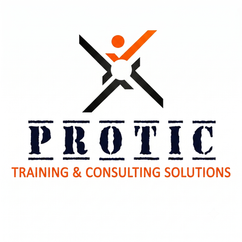

المنصة الرائدة في مصر لتمكين الجمعيات الأهلية والتقديم على المنح وإدارة المشاريع غير الربحية
منصة NGOHUB هي المنصة التنموية الرائدة في مصر لدعم وتمكين الجمعيات والمؤسسات الأهلية والمنظمات غير الربحية. نساعد الجمعيات على المنافسة والتقديم على المنح التنموية والتمويل الدولي والمحلي، وإدارة وتنسيق المشاريع الميدانية باحترافية، وبناء المواقع والمنصات الرسمية المعتمدة، بالإضافة إلى أتمتة العمليات الإدارية وتنظيم برامج المتطوعين لتحقيق الاستدامة وتوسيع الأثر المجتمعي.
كيف نُمكّن جمعيتك الأهلية وتصبح مؤهلة للمنح الكبرى؟
منظومة شاملة صُممت خصيصاً لتلبية متطلبات الجمعيات الأهلية والمجتمعية
المواقع والمنصات الرسمية (.org)
بناء وتصميم موقع إلكتروني احترافي متجاوب يوثق أنشطة الجمعية، تقارير الإنجاز، وقصص الأثر لتعزيز ثقة المانحين والداعمين.
طلب تصميم موقع للجمعيةإدارة المشاريع والتحول الرقمي
نقل إدارة الجمعية من السجلات الورقية المبعثرة إلى منظومة وقواعد بيانات سحابية مشفرة لإدارة وتنسيق العمليات الميدانية وتوثيق الأنشطة التنموية.
طلب أتمتة العمليات وإدارة المشاريعتنظيم وإدارة برامج المتطوعين
هيكلة وتصنيف المتطوعين، استمارات التسجيل الرقمية، توثيق الساعات التطوعية، وإصدار شهادات المشاركة المعتمدة بكفاءة وموثوقية.
طلب تنظيم برنامج التطوعصياغة المقترحات والتأهيل للمنح
إعداد الملف التعريفي المؤسسي، مراجعة معايير الجهات المانحة الدولية، وصياغة مقترحات المشروعات التنموية والذكية والبيئية.
طلب استشارة تأهيل للمنحكيف تدعمك NGOHUB من البنية التحتية إلى التمويل والأثر؟
خارطة طريق واضحة ومجربة لتمكين وتطوير الكيانات غير الربحية
التشخيص وتحديد الاحتياج
تقييم الوضع الرقمي والمؤسسي للجمعية وتحديد الأولويات العاجلة للتطوير والتأهيل.
بناء المنظومة والموقع
تصميم الموقع الرسمي للجمعية، المساعدة في التقديم على المنح، وإدارة المشاريع وتنظيم المتطوعين.
صياغة مقترح المنحة والمكون الذكي
مطابقة أنشطة الجمعية مع المنح الدولية وصياغة المقترحات المكتملة المعايير.
التقديم وقياس وتوثيق الأثر
إرسال طلبات التمويل، إطلاق المشروعات، وإصدار تقارير قياس الأثر لضمان الاستدامة.
إجابات واضحة حول خدمات الجمعيات الأهلية
كل ما تحتاج معرفته عن سياسة تقديم الخدمات، التحول الرقمي، والتأهيل للمنح
نقدم 8 حلول متكاملة تشمل: المساعدة في إعداد وملفات التقديم على المنح، إدارة وتنسيق المشاريع التنموية غير الربحية، تصميم وتطوير المواقع الرسمية (.org / .com)، أتمتة العمليات وقواعد البيانات السحابية، تنظيم وتوثيق برامج المتطوعين، تصميم الهوية المؤسسية وتقارير الأثر السنوية، وبناء لوحات متابعة وتقييم الأداء (M&E).
الاستشارات المؤسسية، التوجيه، إرشاد كتابة المقترحات، وبرامج المتطوعين تقدمها NGOHUB كمبادرة تنموية مجانية. أما الخدمات التي تتطلب حجز موارد خارجية مدفوعة مثل: حجز النطاق الرسمي (.org)، والسيرفرات والاستضافات السحابية السنوية، فتوفرها المنصة بسعر التكلفة المباشرة لمزودي الخدمة أو باستخدام سيرفرات واستضافة الجمعية الخاصة دون أي هوامش ربحية.
نساعد الجمعية في استيفاء الشروط الأساسية التي يطلبها المانحون: 1) وجود موقع إلكتروني رسمي يوثق أنشطتها وسابقة أعمالها. 2) خطط ومنظومة واضحة لإدارة المشاريع وتوثيق الأنشطة. 3) صياغة مقترح المشروع بمكون ذكي أو بيئي وتحديد مؤشرات الأثر المستدام والشفافية المؤسسية.
نعم بالتأكيد! صُممت منصة NGOHUB خصيصاً لمساندة الجمعيات الصغيرة والمتوسطة في كافة المحافظات بمصر والوطن العربي، لمساعدتها على امتلاك أدوات رقمية احترافية تضاهي المؤسسات الكبرى لتمكينها من المنافسة العادلة على التمويلات.
تقرير الأثر المؤسسي والبيئي والمائي لمنصة NGOHUB
أرقام موثقة تجمع بين صون الموارد المائية، خفض الانبعاثات، والجدوى الاقتصادية المستدامة للجمعيات الأهلية الشريكة
صون الموارد المائية والتكيف المناخي في قلب NGOHUB
نظام متكامل يربط بين التحول الرقمي البيئي، العمل الميداني لحماية المجاري المائية، وبوابة منح المياه الدولية
الوفر المائي الرقمي المباشر
يستهلك تصنيع كل طن من الورق ما بين 26,000 إلى 50,000 لتر مياه نقية. بفضل أتمتة سجلات 65+ جمعية شريكة وإلغاء 350 ألف معاملة ورقية سنوياً، تحافظ المنصة على ملايين اللترات من المياه النقية من الهدر الصناعي.
ترشيد مياه الري والحلول الزراعية الخضراء
الذراع البيئي والميداني للمبادرة في قيادة ورش وحملات ترشيد مياه الري للمزارعين والجمعيات الريفية، ونشر أساليب الري الحديث والتسميد الحيوي بالأزولا (مشروع أزولا مصر) للحد من هدر المياه وصون الموارد المائية.
بوابة منح واستثمارات المياه
فهرسة وتأهيل الجمعيات للتقديم على المنح الدولية المخصصة للمياه والتكيف مع التغير المناخي، ومنها منح مرفق البيئة العالمي (GEF/SGP)، صندوق التكيف المناخي (Adaptation Fund)، ومنح الزراعة الذكية مناخياً وترشيد الري.
يتم تحقيق الأثر المائي المباشر على أرض الواقع من خلال النزول الميداني لخبراء ومتطوعي GCT لدعم المزارعين والجمعيات الريفية:
- ورش وحقول ترشيد مياه الري: تدريب المزارعين على ممارسات الري الحديث ومكافحة هدر مياه الري السطحية والجوفية.
- التسميد الحيوي وتقليل الاحتياج المائي (أزولا مصر): نشر زراعة الأزولا كبديل زراعي ومائي مستدام يخفض استهلاك المياه بنسب تصل إلى 30%.
- التوعية البيئية والمناخية للجمعيات الريفية: بناء قدرات الجمعيات الأهلية في القرى لإدارة المشروعات الزراعية الخضراء المستدامة.
يتمثل الترشيد غير المباشر في قطع الهدر المائي الصناعي الضخم الناتج عن تصنيع واستهلاك الورق المكتبي:
- 10 لترات مياه نقية موفرة لكل ورقة A4: معادلة علمية معتمدة لحساب البصمة المائية لصناعة الورق ولب الخشب والمبيضات.
- إلغاء السجلات والاستمارات الورقية: أتمتة العمليات الإدارية وقواعد البيانات السحابية توفر سنوياً أكثر من 3.5 مليون لتر ماء نقي.
- حماية الغابات والمناخ: خفض استهلاك الورق يوقف قطع الأشجار ويقلل انبعاثات الكربون الناتجة عن النقل والتخزين.
لوحة مؤشرات الجدوى الاقتصادية والعائد الاجتماعي على الاستثمار (SROI)
تحويل المصروفات الإدارية المستنزفة في المعاملات الورقية إلى وفر تشغيلي موجه للمشاريع التنموية والخدمات المجتمعية
+850,000 ج.م
توفير مباشر في بنود الورق، الأحبار، صيانة الطابعات، وتكاليف النقل والأرشفة عبر 65+ جمعية شريكة.
1 : 8.5
كل 1 جنيه مستثمر في التحول الرقمي للجمعيات يحقق عائداً مجتمعياً واقتصادياً وبيئياً يوازي 8.5 جنيه.
+4,200 ساعة/سنة
إعادة توجيه وقت فرق العمل والمتطوعين من الأعمال الروتينية إلى النزول الميداني وتحسين الخدمة.
100%
منع تكرار صرف المساعدات للأسر نفسها عبر الربط السحابي والتحقق بالرقم القومي والموقع الجغرافي.
التوافق مع 10 أهداف للتنمية المستدامة (UN SDGs)
تُحقق منصة NGOHUB محاذاة مباشرة لأهداف الأمم المتحدة العشرة (1، 2، 4، 5، 6، 8، 10، 12، 13، 17)، مع تركيز محوري على الهدف السادس (المياه النظيفة والنظافة الصحية) عبر توفير 3.5 مليون لتر مياه نقية وورش ترشيد الري، والهدف الثالث عشر (العمل المناخي) بتجنب 4.2 طن كربون، والهدف السابع عشر (عقد الشراكات لتحقيق الأهداف) بالربط بين 65+ جمعية أهلية وشركاء التنمية.
هل ترغب في معرفة الوفر المائي والمالي لجمعيتك بالأرقام؟
استخدم مركز الحاسبات التفاعلية المخصص لتقدير حجم الوفر المائي المباشر وغير المباشر، واكتشف أثر باقات خدمات NGOHUB، وقِس نسبة جاهزيتك للمنح فوراً.
مركز الحاسبات التفاعلية لترشيد المياه والأثر والجاهزية
أدوات رقمية ذكية صُممت خصيصاً لمساعدة الجمعيات الأهلية على قياس وفر المياه، أثر الخدمات، والجاهزية للمنح
الأثر التراكمي للخدمات المختارة
حاسبة الجاهزية الرقمية والتأهيل للمنح للجمعيات الأهلية
أجب على المعايير الستة أدناه لتشخيص الوضع المؤسسي لجمعيتك واستخراج تقرير فوري بنقاط القوة، نقاط الضعف، وخطة العمل التالية:
جاهزية متقدمة ومكتملة
جمعيتك تحقق كافة المتطلبات الأساسية للمنافسة على المنح الكبرى والشراكات الدولية المرموقة.
شبكة الشركاء والجهات المتعاونة مع المبادرة
هيئات وجمعيات ومؤسسات أهلية وحكومية وخاصة جمعنا بها تعاون وتنسيق مشترك

جمعية رحمة لتنمية المجتمع والطفولة
الشريك المجتمعي الرئيسي للمبادرةالشريك المجتمعي الأساسي والمستضيف للمبادرة في تطبيق المشروعات الميدانية وتنظيم القوافل وتدريب الكوادر وتنمية المجتمع والطفولة بدمنهور.

جمعية بنيان للتدخل المبكر
شريك تأهيل ذوي الهممالتعاون في دعم برامج التدخل المبكر والتحول الرقمي لخدمات رعاية وتأهيل الأطفال ذوي الإعاقة.

محافظة / وزارة البحيرة
شريك التنسيق المؤسسي المحليالتعاون والتنسيق في الفعاليات والمشروعات التنموية وخدمة الجمعيات الأهلية بمحافظة البحيرة.

مركز التدريب البيئي
شريك التدريب وبناء القدراتتقديم برامج التدريب المتخصص لكوادر الجمعيات في مجالات الاستدامة البيئية وإدارة المخلفات.

حاضنة الأعمال البيئية للمرأة المصرية
شريك تمكين المرأة الخضراءدعم رائدات الأعمال في المشروعات الخضراء وإتاحة فرص التمويل والتسويق الرقمي لمبادراتهن.

PR CUBE
الشريك السعودي للمبادرةالذراع الاستشاري والإعلامي في المملكة العربية السعودية لتطوير المحتوى المؤسسي والشراكات التنموية.

Green Cap Team (GCT)
المبادرة الأم والشريك الشبابيالمبادرة الشبابية الرائدة في إدماج الشباب بالعمل التطوعي والبيئي وإعداد وتأهيل الكوادر الميدانية.

مشروع أزولا مصر (Azolla Egypt)
مشروع بيئي وزراعي رائدتطوير المنصة الرقمية وحاسبات خفض الانبعاثات بالتعاون مع مرفق البيئة العالمي SGP/GEF/UNDP.

PROTIC Solutions
الشريك الاستشاري والتقنيتقديم الاستشارات المتخصصة في بناء القدرات المؤسسية وتطوير الحلول البرمجية للجمعيات الأهلية.

جمعية الإسراء الخيرية
جمعية أهلية شريكةالتعاون في أتمتة سجلات المساعدات ودعم الأسر الأولى بالرعاية والأنشطة التنموية المجتمعية.

نقابة المهندسين بالبحيرة
شريك الابتكار والهندسةالتعاون في تأهيل الكوادر الهندسية والتحول الرقمي للمكون الذكي بالمشروعات التنموية.

وزارة التضامن الاجتماعي
المظلة التنظيمية والوطنيةالعمل على دعم الجمعيات والمؤسسات الأهلية المشهرة رسمياً لتعزيز مساهمتها التنموية في المجتمع.


بوابة الفرص والمنح الدولية الحقيقية 100%
أكثر من 66 فرصة ومنحة نشطة وموثقة من كبرى الهيئات الدولية والمانحين لتمويل الجمعيات والمشروعات والشباب
خدمات متكاملة للجمعيات والمؤسسات التنموية
نظام خدمات متكامل يشمل حلولاً برمجية مدفوعة للبنية التحتية، وخدمات استشارية ومبادرات تمكينية
سياسة التسعير والموارد الخارجية:
الخدمات الاستشارية، الإرشادية، وتأهيل المكون الذكي تقدمها NGOHUB كمبادرة تنموية مجانية. أما الخدمات التي تحمل شارة [مدفوع] فهي تتطلب حجز موارد تقنية خارجية مدفوعة مثل: حجز النطاق الرسمي (.org / .com) والسيرفرات والاستضافات السحابية السنوية؛ وتوفرها المنصة بالتكلفة الفعلية المباشرة لمزودي الاستضافة أو من خلال سيرفرات واستضافة الجمعية الخاصة.
عن منصة NGOHUB والشركاء
مبادرة تنموية متخصصة في تمكين المجتمع المدني وربطه بالتكنولوجيا والمنح
الرسالة والنشأة
NGOHUB هي منصة تنموية انطلقت لتمكين الجمعيات الأهلية والمشروعات المجتمعية، وخاصة الصغيرة والمتوسطة، من خلال حلول رقمية ومؤسسية تساعدها على تحسين الظهور، توثيق الأثر، تنظيم العمل، إدارة المتطوعين، والجاهزية للمنح.
شبكة الشركاء الميدانية
تتعاون NGOHUB مع نخبة من الجمعيات والمؤسسات الرائدة مثل جمعية رحمة لتنمية المجتمع والطفولة (الشريك المجتمعي الرئيسي)، جمعية الإسراء الخيرية، بنيان للتدخل المبكر، مركز التدريب البيئي، حاضنة الأعمال البيئية للمرأة، وPR CUBE (الشريك السعودي)، لتقديم حلول شاملة ومستدامة.
ميزة الشباب واللغة غير الربحية
ميزتنا أن المتطوعين شباب معاصر للتكنولوجيا وأدوات الذكاء الاصطناعي، وفاهمين التطوع من الداخل. على عكس الوكالات التجارية (Media Agencies) التي تتحدث بلغة التسويق والأرباح، نحن نتحدث لغة العمل التنموي والأثر الميداني.
تواصل مع مستشاري منصة NGOHUB
نحن هنا لدعم جمعيتك ومؤسستك الأهلية في التقديم على المنح، إدارة وتنسيق المشاريع، وبناء الحلول الرقمية المستدامة.
الصفحة الرسمية على فيسبوك
تابع أحدث المنح وفرص التمويل وفعاليات تمكين الجمعيات الأهلية.
زيارة صفحة NGOHUBطلب استشارة أو دعم رسمي
سجل بيانات جمعيتك ونوع الدعم المطلوب وسنتواصل معكم فوراً.
تسجيل الدخول للوحة تحكم NGOHUB CMS
أدخل اسم المستخدم وكلمة المرور الإدارية للوصول وإدارة المنظومة